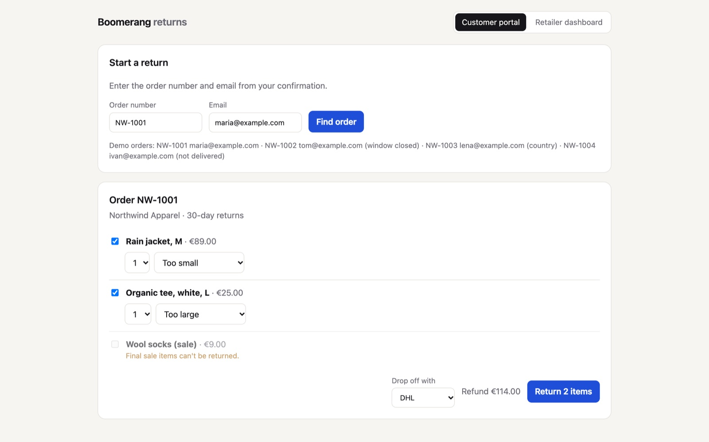
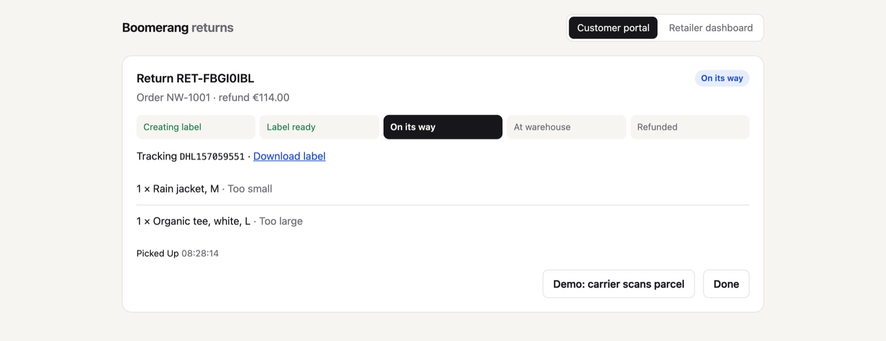
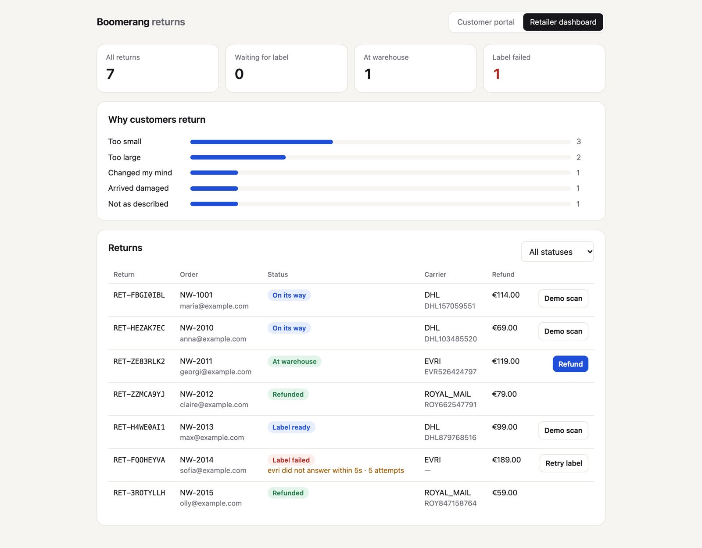

Boomerang
RUBY ON RAILS / E-COMMERCE RETURNS
A returns platform for online shops. A customer sends back what didn’t fit, a carrier label is created, the parcel is tracked to the warehouse and the shop refunds — and nothing is duplicated when the carrier misbehaves.
TRY THE LIVE DEMO ↗ EXPLORE THE SOURCE ↗One return. Four steps.
CUSTOMER → CARRIER → WAREHOUSE → REFUND- 01 / CHECKReturn policy
Delivered, inside the 30-day window, an allowed country, not a final-sale item, not already returned.
- 02 / LABELBackground job
The carrier API is called outside the request, retried on timeouts and marked failed after five attempts.
- 03 / TRACKSigned webhooks
The carrier reports pickup and delivery. Every event is verified, stored once and applied in order.
- 04 / REFUNDRetailer dashboard
The shop sees every return and its reason, and refunds once the parcel reaches the warehouse.
The carrier in the demo is simulated and fails on purpose: four requests in ten time out, and in half of those the label was created but the answer was lost.

01 — THE PROBLEM
Returns are where online shops lose money quietly.
A return touches the customer, the shop’s rules, a carrier’s API and a warehouse. Each step can fail on its own: a customer clicks “Confirm” twice, a carrier takes ten seconds to answer, a tracking update arrives twice or out of order. Handled naively, each of those becomes a second shipping label, a refund for an item that never arrived, or a support ticket.
Boomerang is a small version of that workflow, built to show how the edges are handled rather than only the happy path.
02 — WHEN THINGS GO WRONG
Every failure has a defined outcome.
- Double clickEach confirmation carries an Idempotency-Key. The same key returns the original return, and a unique index settles the race between two identical requests.
- Carrier timeoutLabel creation runs as a background job and retries with backoff. After five attempts the return is marked failed with the reason, and the shop can retry it.
- Lost responseLabels are requested with our return id as reference, so a retry after a lost answer gets the same label back instead of a second shipment.
- Last unitThe order row is locked while the policy is checked, so two different requests can’t both return the last unit of an item.
- Duplicate webhookEvents are stored by the carrier’s event id; a repeat is acknowledged without changing anything.
- Late webhookStatus only moves forward. A late “in transit” after “delivered” is kept in the timeline but ignored.

03 — RAILS DESIGN
Small objects with one job each.
Rules live in a ReturnPolicy object that answers two questions: what can be returned from this order, and if not, why. Each “no” is a sentence the customer portal shows as-is. CreateReturn wraps the transaction, the row lock and the idempotency check; CreateLabelJob talks to the carrier through Active Job; CarrierWebhook verifies the HMAC signature, stores the event and applies it.
The carrier sits behind a small interface, so the simulated client used by the demo and the scripted one used by the tests are interchangeable. The React and TypeScript frontend is built into Rails’ public/ folder and served by the same app.

04 — VERIFIED BEHAVIOR
The tests break the carrier on purpose.
- The same Idempotency-Key twice creates one return.
- A timeout followed by success creates exactly one label.
- A lost response followed by a retry returns the same label.
- Five timeouts in a row end in “label failed” with the reason.
- A repeated webhook is stored once; a late one never moves the status back.
- An unsigned webhook is rejected; the retailer API rejects a wrong token.
28 RSpec tests cover the policy, the services, the label job and the HTTP API. GitHub Actions runs them against PostgreSQL and type-checks and builds the frontend on every push.
READ THE TESTS ↗05 — BOUNDARIES
Say what it does not do.
The carrier, the labels and the refunds are simulated; no real parcel or payment is involved. Background jobs run inside the web process to keep the demo to one free service; in production they would run on Sidekiq with Redis or on Solid Queue, without changing the job code. The free demo server sleeps when unused, so the first visit can take up to a minute.
The project was built with AI-assisted tooling; the design decisions and the failure cases are documented in the repository.
06 — TRY IT
Order NW-1001, maria@example.com.
Start a return in the customer portal, choose items and a carrier, then press “carrier scans parcel” to play the carrier. Open the retailer dashboard to see it arrive, and refund it once it reaches the warehouse. Orders NW-1002 to NW-1004 show the cases where a return is refused.
OPEN THE LIVE DEMO ↗ VIEW REPOSITORY ↗